# Seven-profile rehearsal — recovery follow-up
2026-10-30, approximately 19:32–19:56 UTC (13:32–13:56 MDT). Production https://buhurt-os.app. Scoring desks displayed build **52e63b4** after recovery/reload; the earlier phase below used d90be08. This is a completed operational duel and mixed phone/paper Profight rehearsal across seven independent Edge profiles, **not a full pass of every historical A–H edge case**.
Only the preserved synthetic event [TEST New Domain Longsword Rehearsal 2026-10-30](https://buhurt-os.app/events/test-new-domain-longsword-rehearsal-2026-10-30) was changed. No real event/fighter/team/HACSA records, source code, schema or app settings changed in this follow-up. Four QR counters, organizer, secretary and signed-out spectator participated. Phone layouts used 390×844 browser viewports, desktop 1440×900; physical touch ergonomics were not verified.
## Recovery results
| Journey | Result | Evidence / limits |
|---|---|---|
| Saved clock command recovery | PASS safety guard | Existing command rejected as too old rather than unexpectedly starting the clock; fresh round-end action succeeded. Exact text in 10-recovery-command-expired.txt. |
| Duel completion | PASS | R2 submissions 6/6 Red, 2/2 Blue; award 6–2. Official total **14–5** on both desks and all four phones' Last fight. Match 2fa76d8f-15e5-4431-9138-c548847743df. Screenshots12–13. |
| Duel final phone notice | FAIL copy/state | Last fight updated, but stale “Score confirmed. Wait for the next round” remained after fight completion. |
| New Profight setup sync | PASS functional, timing borderline | Fresh TEST Seven Profile Profight, four synthetic fighters, Division2/tournament/Heavyweight. Secretary left setup without reload; observed at about5.7s, not proof of a ≤5s guarantee. 1:30 round/45s break shown. |
| Four line-marshal phones | PASS | Both fighters' strike pads; independent sheets, no other marshal scores; takedown recorded and Undo removed the last armour mark. |
| Automatic round pop-up and paper entry | PASS | Phone and desk pop-ups opened. Paper entry returned to desk dialog; confirmation closed it. Gap7 skipped criteria. Letters refused in numeric field. Screenshots14–15. |
| Paper correction | PASS | Fix required a reason; corrected11–3 replaced current10–3 sheet and replicated without reload. Removal control was disabled without reason; actual removal was not exercised. |
| Criteria | PASS | Grappling → list control → aggression → defence, stopping at first non-Even. Snapshot16. |
| Mixed sheets and averaging | PASS | R1 five sheets averaged9.8–9.2. R2 three sheets averaged9.667–9.333. Missing fourth phone excluded only by organizer with reason; secretary blocked. |
| Excluded phone | PASS | “Round 2 was confirmed without your sheet” closed its sheet; no automatic unstarted-round sheet; Hand in disabled. Screenshot17. |
| Uneven-sheet finish | PASS | B beat D **19.47–18.53 by split decision**, not draw. Official result and Appeals visible, observer exact score and all four phones' Last fight correct. Match0d6ca418-dd1a-44b4-8dcf-19514c183b59. Evidence18–19. |
| Official/observer layouts | PASS measured states | No horizontal overflow at390×844 or1440×900; Next fight stayed inside card. Measurements18-layouts.json; screenshots18. Round dialog at390 had scrollWidth390. |
| Division2 TKO | PASS | Clock paused at1:07; round10–7, fight continued. Medic hold required reason and organizer Cleared worked. What was checked and Cleared each44px high. Screenshot20. |
| KO while behind on points | **FAIL P1** | KO against A paused clock at0:59, but saving C as winner with current total10–7 rejected: **“The winner cannot have the lower score.”** HTTP400 outrance_finish. Screenshots21–22. |
| KO after confirming second round | PASS, does not excuse preceding failure | Confirmed R2 protocol7–10, total17–17, then C's KO saved officially. This was continued synthetic testing, not a valid workaround to recommend for real fights. Screenshot25. |
| KO hold | PASS | Opening D–A showed “This fight cannot start yet” and permanent tournament exclusion; no Cleared control. Screenshot27. |
| Post-KO next-round prompt | FAIL P2 | Before finalizing, confirmed tied totals still offered Start round3 despite active KO. Fight-ending calls must take priority. |
| Save reliability | FAIL intermittent | Paper Add displayed “Could not save the paper sheet. Check your connection and try again.” Retry succeeded. Organizer also became stale/No signal and needed reload. Evidence23–24. |
| Signed-out event search | PASS limited | All-events search returned no match. Screenshot26. Fixture remains draft; this does not re-prove published test-event privacy. |
| Genuine hidden-tab recovery | NOT VERIFIED | Browser continued reporting document.hidden=false; native tab selection unavailable. Foreground cross-desk updates passed, but no hidden-tab pass claimed. |
Unrepeated historical cases: Division1 TKO; complete warning/yellow/red/void escalation and penalty matrix; full appeal submission/upheld outcome; every tie/head-marshal decision variant; published privacy and rankings exclusion. Do not infer these passed from this run. Remaining synthetic fixtures and journals preserved; no records deleted.
## Supabase recovery assessment
Service recovered enough to complete fights, but **not a clean bill of health**. Bounded project-wide logs cannot attribute traffic or latency exclusively to this rehearsal. At19:30–19:32 successful matches took up to18,596ms and device_whoami13,301ms. At19:34–19:43:1711 HTTP200 responses, upstream p95 about997ms/max8238ms;532 HTTP204, p95 about241ms/max3663ms; four HTTP500, maximum11,478ms; no503 in that sampled window. These are upstream service times, not end-to-end browser latency.
At19:43–19:52 sampled relevant errors/actions: counter_acknowledge_run400×4; outrance_finish400×1 (146ms, validation failure above); successful outrance_enter_sheet max4326ms. No500/503 in that query window, but a browser save error still occurred; logs may lag and lack of a matching log is not proof the UI error was harmless.
Performance advisors:19 unindexed foreign-key notices,4 no-primary-key notices,84 unused-index notices,11 multiple-permissive-policy warnings. These are investigation leads, not established causes. Do not drop indexes or change RLS blindly. Check actual slow plans, pool saturation and lock waits. See [Supabase foreign-key index guidance](https://supabase.com/docs/guides/database/database-linter?lint=0001_unindexed_foreign_keys).
## New suggested fixes with code and reasoning
These are **design sketches, not applied patches**. Retain the previous report's receipt deduplication, bounded retry and clearer status-label suggestions below.
### P1 — allow a validated stoppage winner regardless of points
Observed path: `outrance_finish` validates an active KO call, then delegates via `submit_match_result` to generic finalization. The hosted `finalize_match` score guard rejects winner B when scoreB < scoreA (and symmetrically A). The Outrance migration's finish path passes rounded actual totals into this generic path. The guard is suitable for a points win but wrongly blocks a KO winner.
Keep original totals. Do not fake/reverse scores or trust a client-provided method string to bypass validation. Factor an internal finalizer accepting a server-validated basis; restrict its execution and validate authorization, active call, loser, match, and expected version inside the same transaction.
```sql
-- Illustrative structure inside the authorized Outrance transaction.
-- Names are placeholders for a private implementation, not existing RPCs.
-- Lock match/call rows and re-check that the call is active and applies here.
v_stoppage_valid := v_authorized
and v_call_match_id = p_match_id
and v_call_active
and v_call_loser = v_expected_loser
and (v_call_kind = 'ko'
or (v_call_kind = 'tko' and v_division = 1)
or v_call_kind = 'disqualification');
if p_basis in ('ko', 'tko', 'disqualification') then
if not coalesce(v_stoppage_valid, false) then
raise exception 'No valid fight-ending call' using errcode = '22023';
end if;
-- Invoke private finalization with the validated call ID and real totals.
-- Public score-only entry points retain the ordinary winner/score guard.
else
-- Existing points-win validation remains mandatory.
end if;
```
Use the codebase's actual call enum values and permission helpers. The internal helper must not be publicly executable; do not add an unrestricted `skip_score_check` RPC parameter. Ensure call kind exactly matches requested finish basis, DQ is valid under the rules, and all normal journal/audit/hold writes remain atomic and idempotent.
Regression tests: KO winner trailing before and after round confirmation; KO tied/ahead; Division1 TKO ends, Division2 TKO continues; DQ; inactive/voided/wrong-match call rejected; unauthorized/forged basis rejected; ordinary points winner with lower score still rejected; retried command creates one final result and one hold.
### P2 — suppress extra-round actions once a fight-ending call exists
```tsx
// Derived from authoritative active calls and division, not dialog state.
const canOfferExtraRound = !officialResult && !fightEndingCall
&& scheduledRoundsConfirmed && totalsAreLevel;
return canOfferExtraRound ? <StartExtraRound /> : null;
```
Show a prominent finish-by-KO/TKO/DQ action with the opponent identified. Validate on the server too: a stale tab must not start a fresh round after an active fight-ending call. Do not suppress later rounds for Division2 TKO alone.
### P2 — end submitted notices at fight completion
```tsx
const submittedNoticeVisible = notice?.kind === 'submitted'
&& notice.runId === currentRun?.id
&& !fightIsFinal && !roundReopened;
// Evidence/recovery notices use their own persistence rules.
```
Test submit→new round, submit→official result, excluded sheet→official result, and recount. A final phone screen should prioritize the exact final score; no “wait for next round” message after the fight ends.
### Save-error recovery and stale state
Preserve paper input and its stable command ID until server acknowledgement. After an unknown outcome, reconcile that ID before retrying; do not create a second sheet with a fresh ID. Render pending/error visibly and distinguish saved score queue from connection freshness.
```ts
// Architectural sketch: backend must support idempotent command lookup.
const command = draft.pendingCommand ?? createCommandOnce(draft);
persistPending(command);
try {
const result = await submitSameCommand(command);
acknowledgeAndClearDraft(result.commandId);
} catch (error) {
showRetryKeepingDraft(command.id, classifyForUser(error));
}
```
Simulate server-commit/response-loss and confirm retry yields one sheet; test reconnect catches up both desks. Log sanitized RPC/status/correlation identifiers, never tokens or full scoring payloads. The receipt/poll changes below are hypotheses to validate with telemetry, not a substitute for fixing database errors.
## Evidence and historical record
Evidence10–27 is in the adjacent `seven-profile-rehearsal-d90be08-evidence` folder. The filename retains the initial build for stable existing links; the follow-up build is52e63b4. Earlier report below is historical: its “blocked” and “resume” statements describe the initial phase and are superseded by the recovery results above.
---
# Seven-profile rehearsal — production d90be08
Date: 2026-10-30. Site: https://buhurt-os.app. **Partial / blocked by service errors; not a completed full rehearsal.** Seven independent Edge profiles participated: organizer, secretary, four QR counters, signed-out spectator. Phone viewports 390×844; desks 1440×900. Viewport simulation, not physical-phone/touch testing.
## Synthetic fixture preserved
[TEST New Domain Longsword Rehearsal 2026-10-30](https://buhurt-os.app/events/test-new-domain-longsword-rehearsal-2026-10-30), event `2ec7b079-9550-40dc-905d-fab3dc2ae5fa`, test_event=true, draft. Page displays Test data/private cleanup notice. Existing event is not organization-linked. Existing test accounts belong to the legacy test organization; no organization/admin permissions changed. Two event_staff entries were added for these test accounts (organizer and scorekeeper) on this private test event only. This setup used the database connector, not the staff UI. New-event permission remains restricted for the test organizer; reused the verified synthetic event instead. No real records, source code, settings, schema, or authentication configuration changed. No records deleted.
New competition: TEST Seven Profile Longsword. Existing synthetic fighters TEST Outrance Man B (Red) vs TEST Outrance Man A (Blue). Match `2fa76d8f-15e5-4431-9138-c548847743df`. Round 1 officially confirmed 8–3. Round 2 counts: red 6/6, blue 2/2. Last observed desk: paused 0:35, round-end command unconfirmed after one retry. Do not assume that command failed to commit: reconcile server state before resuming, using its existing saved command. Preserve all phone journals.
## Results
| Check | Result | Evidence |
|---|---|---|
| Organizer and secretary password sign-in | PASS | Separate existing test accounts, scoped event access |
| Four independent Counter QR sessions | PASS | One existing and three fresh device sessions; separate operators and Red/Blue assignments |
| Private synthetic event | PASS, limited | Test note visible; signed-out direct URL returns not-found. Draft fixture only; published privacy not retested |
| Start round and phone discovery | PASS | 4/4 start receipts; four counters followed new fight without reload |
| Independent Longsword scoring | PASS | R1 red 8/6 and blue 2/4; +2 adds two; R2 Undo restored 7→6 |
| Longsword pad wording | FAIL | Visible pad only '+2'; accessible name 'Count two points, head or torso' omits two-hands qualification |
| Automatic round-end confirmation | PASS R1 | Desk and all four phones opened score confirmation automatically; no reliable precise latency measured |
| Counter submission | MIXED | Three ordinary confirmations succeeded. Edited fourth score 4→3 failed once, retry succeeded as marshal-review evidence |
| Marshal award and next round | PASS | Reason recorded, R1 8–3 confirmed; R2 reset counts to zero |
| Next-round phone notice | FAIL | Previous 'Score confirmed. Wait for the next round' persisted while R2 running, cleared after tap |
| Round-two clock command | FAIL / blocked | End round timed out; same-command retry also unconfirmed, then No signal |
| Narrow layout at failure state | PASS, limited | Four phones innerWidth390, scrollWidth375; desks1440, scrollWidth1425/1440. No horizontal overflow at measured state |
| Final result screens, full Profight journeys, hidden-tab recovery | NOT COMPLETED | Service degradation blocked completion; do not carry earlier-run passes into this run |
Paused phone still says 'Tap COUNT for every valid strike' and keeps pads enabled. This may permit legitimate late taps, so treat as a copy/phase clarity issue pending product intent, not proven scoring-rule violation.
## Reliability findings and Supabase monitoring
Read-only bounded log queries; no load generator. Project-wide logs can include other users. They demonstrate server-facing latency/errors, not proof this rehearsal caused them, nor proof of a particular database bottleneck.
19:21–19:25 UTC window: matches returned one HTTP500 (15,291ms); successful device_refresh_session reached20,610ms; matches18,652ms; counter_state10,452ms; counter_deliver_action10,387ms; lyst_state9,052ms. Counter edited-score confirmation displayed 'Could not confirm. Your counts are kept here. Try again.' Retry succeeded. Corrected3 remained review evidence while canonical desk count remained4; the marshal explicitly reviewed this and awarded3. Do not silently replace provisional evidence with an official score.
19:25–19:29 UTC window:
| Request path | Status | Requests | Maximum upstream ms |
|---|---:|---:|---:|
| /rest/v1/matches | 200 |49|43747|
| /rest/v1/rpc/device_whoami |200|26|36805|
| /rest/v1/rpc/match_readiness |200|7|22226|
| /rest/v1/rpc/counter_state |200|255|11420|
| /rest/v1/rpc/counter_state |503|24|8932|
| /rest/v1/rpc/lyst_state |503|12|5780|
| /rest/v1/matches |503|18|4631|
| /rest/v1/rpc/match_readiness |503|1|3365|
| /rest/v1/rpc/device_whoami |503|3|2369|
| /rest/v1/rpc/track_activity |503|1|2238|
| /rest/v1/rpc/counter_acknowledge_run |204|254|4860|
Headers measured: response.headers.x_envoy_upstream_service_time. Counts are bounded server logs, not browser round-trip times. At 19:18:13 and19:29:05 database snapshots: backends21→28; cumulative deadlocks0→0; commits +3442, rollbacks +29; temp files +18, temp bytes +52,048,819. These are whole-database deltas, not attributed to this test. Initial lock wait snapshot0. No continuous CPU/memory/lock monitoring was available, so do not claim absence of resource pressure.
Console captured only '[BuhurtOS] Object' on counter4 at19:24:20.843Z and secretary19:29:10.903Z, source /assets/index-tBXzsjtq.js; it did not expose useful error details. No credentials or QR bearer links included.
## Suggested fixes with reasoning and code
Suggestions only, not applied or validated. Source reviewed from fetched main52e63b4; browser reports d90be08, so compare deployed source before patching.
### P1: server degradation / excessive receipt traffic
Inspect slow RPC query plans, connection-pool pressure and server logs before choosing an index or increasing capacity. counter_acknowledge_run had254 calls in the four-minute window. In src/pages/lyst/CounterPage.tsx the effect depends on the prepared_run object, which can change identity on every poll. Deduplicate successful receipt state by seat/run/started/pending, keep explicit heartbeat separately if required, and retry failed receipt delivery with backoff. Never mark a receipt acknowledged until the server accepts it.
```tsx
// Illustrative core; integrate generation cleanup and retry scheduling.
const acked = useRef<string | null>(null);
const sendingAck = useRef(false);
async function sendReceipt(seat: string, run: string, started: boolean, pending: number) {
const key = JSON.stringify([seat, run, started, pending]);
if (acked.current === key || sendingAck.current) return;
sendingAck.current = true;
try {
await acknowledgeCounterRun(seat, run, started, pending);
acked.current = key;
} finally { sendingAck.current = false; }
}
```
Use primitive effect dependencies; if input changes while a receipt is in flight, schedule the latest state afterward. Failed receipts must remain retryable. Preserve server receipt semantics and any required heartbeat; dedup is a candidate optimization, not a proven root-cause fix.
src/lib/lyst/useLystState.ts already prevents overlapping requests, but queued refreshes can retry immediately after slow failures. Add bounded jittered backoff for transient errors; retain immediate explicit user refresh and visibility recovery, single-flight, generation guards and stale-response protection.
```ts
function retryDelay(failures: number, random = Math.random) {
const cap = Math.min(30_000, 2_500 * 2 ** Math.min(failures, 4));
return Math.round(cap * (0.8 + random() * 0.4));
}
// Schedule next background read AFTER completion; don't replay a backlog
// of interval/realtime nudges immediately after a 503.
```
Acceptance: simulate503/slow reads, assert no concurrent reads or retry storm; recover current state after reconnect; round actions retain their original command IDs. Do not blindly retry score mutations with new IDs. Existing clock confirmation dialog correctly warns about unknown outcome; preserve it.
### P2: stale success notice crosses rounds
Scope success notices to the run and phase, rather than clearing all notices on any state update (which could hide saved-evidence warnings).
```tsx
type Notice = { kind: 'submitted' | 'evidence'; runId: string; text: string };
const visibleNotice = notice?.kind === 'submitted' && notice.runId !== run?.id
? null : notice;
```
Also hide a submitted notice if the same run is explicitly reopened for recount. Test round1 submit→round2 start without a tap; evidence warnings must survive.
### P2: clear Longsword pad label
Render the scoring qualification visibly and accessibly, only for the appropriate Longsword rule mode. Preserve the large tap target.
```tsx
<button className="cp-count is-two" disabled={!canCount} onClick={() => count(2)}
aria-label="Head or torso, two hands, plus 2 points">
<strong>+2</strong><span>Head or torso, two hands</span>
</button>
```
Do not apply this text to other weapons indiscriminately. Validate390px wrapping and target height.
### P2: connection status contradicts itself
Desk displays 'Synced' / 'All score actions confirmed' alongside 'No signal' and an unconfirmed clock command. Separate score-queue state from live connectivity; label each precisely.
```ts
const connectionLabel = offline ? 'Connection lost · showing saved state'
: pendingClock ? 'Clock action awaiting confirmation' : 'Connected';
```
Keep 'All score actions confirmed' explicitly scoped to scores. Log sanitized RPC name/status/error category/correlation ID instead of an opaque Object, without tokens, payloads or personal data.
## Evidence
See adjacent seven-profile-rehearsal-d90be08-evidence folder: screenshots01–09, round-one snapshots, final-observations.json. The HTML companion embeds the same text and screenshot gallery. These screenshots show the actual failure states, not a successful final fight.
## Resume checklist
1. Establish Supabase recovery and inspect the saved round-two clock command before any new mutation.
2. Complete round2 confirmations, marshal award6–2 if all evidence still agrees, and finalize. Verify both desks and four phone final screens.
3. Run Profight line-marshal/paper/criteria/missing-phone/recount/finalization journeys and remaining historical edge cases, with exact fractional scores and privacy checks.
4. Retest hidden-tab recovery and mobile official-result layout. Do not report the full rehearsal passed until these finish.
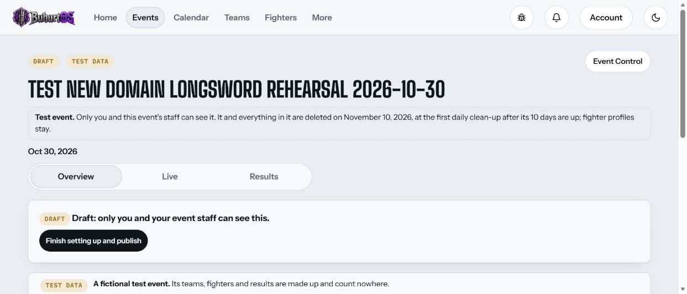
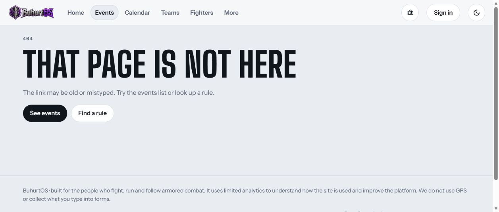
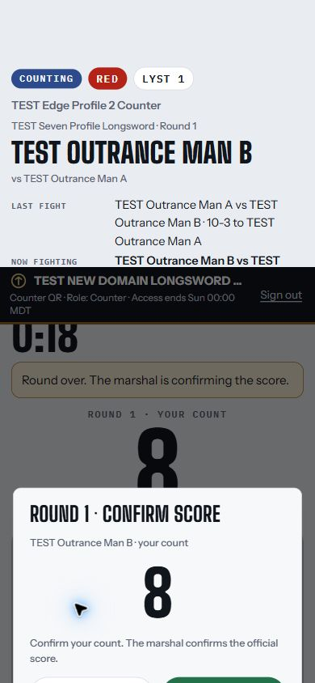
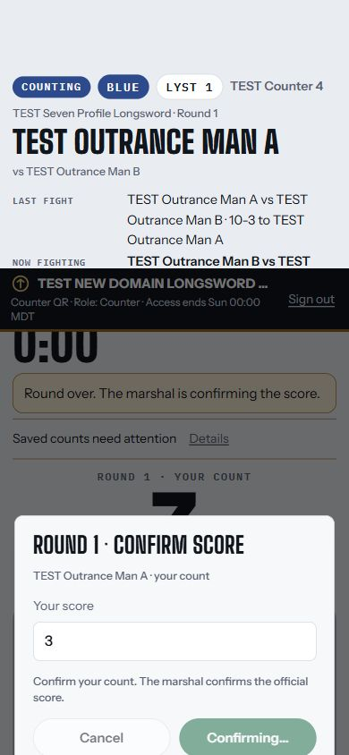
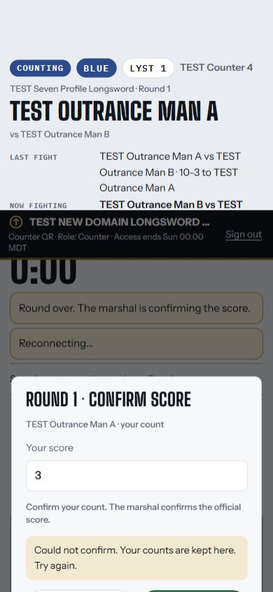
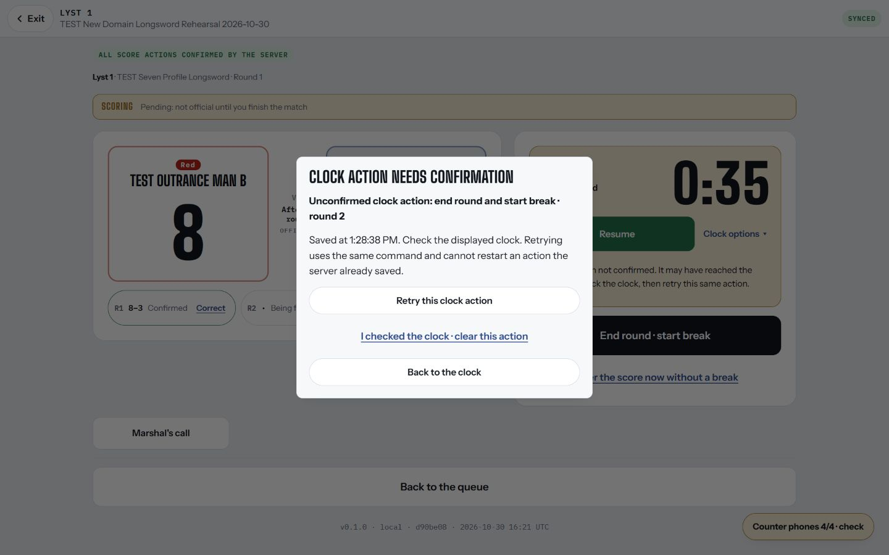
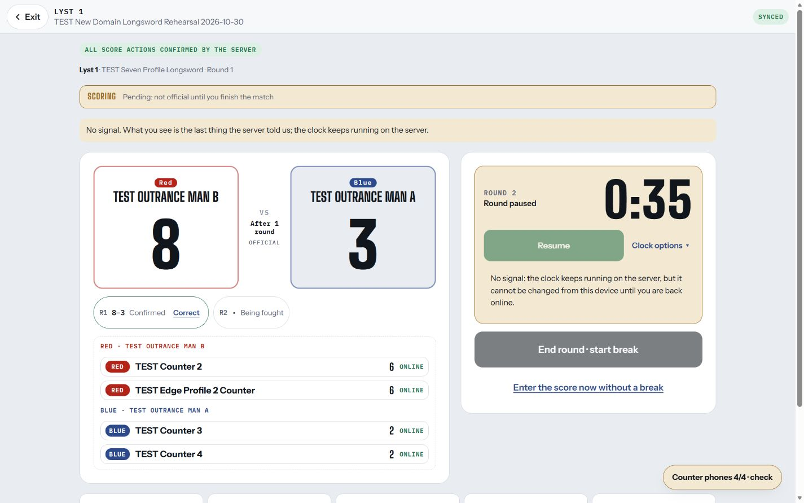
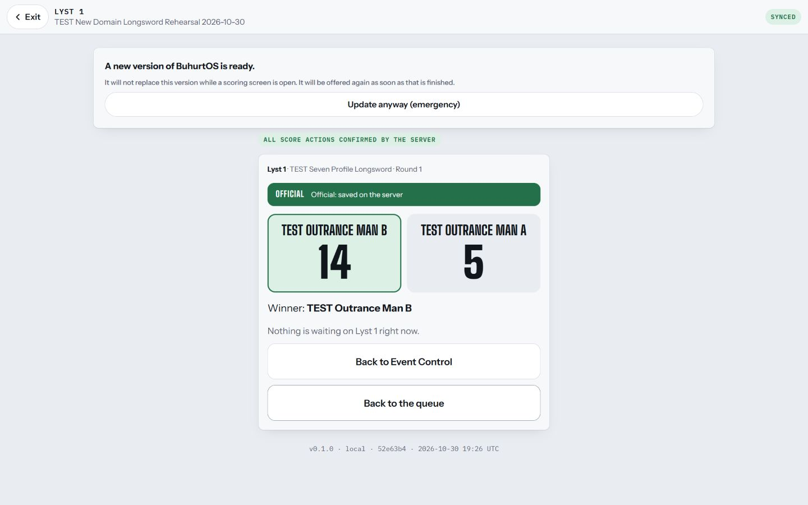
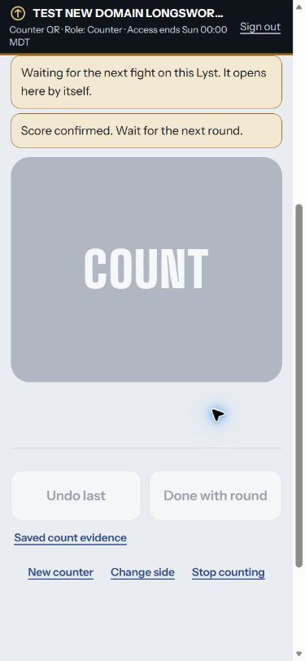
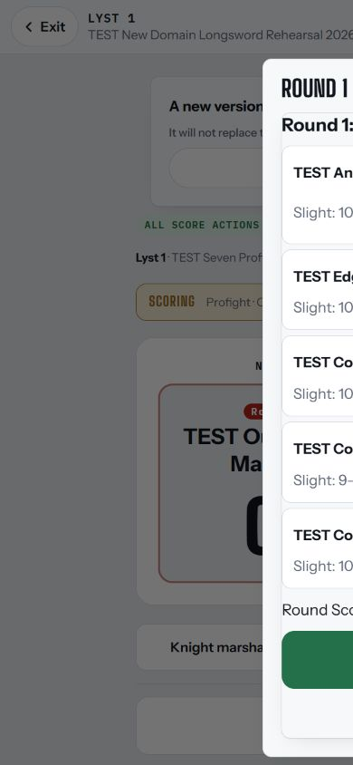
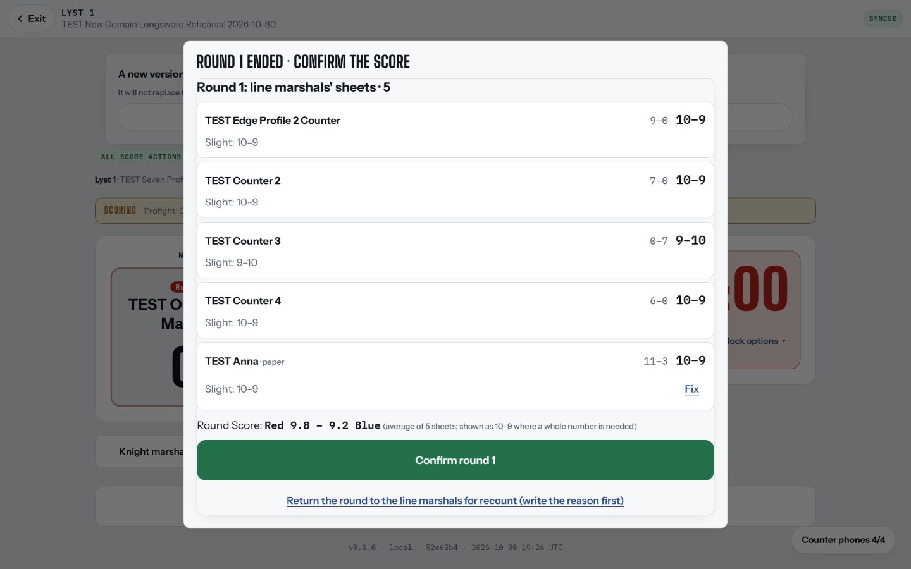
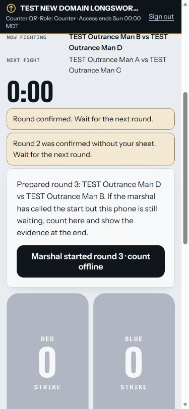
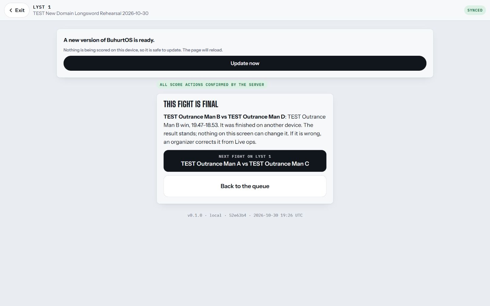
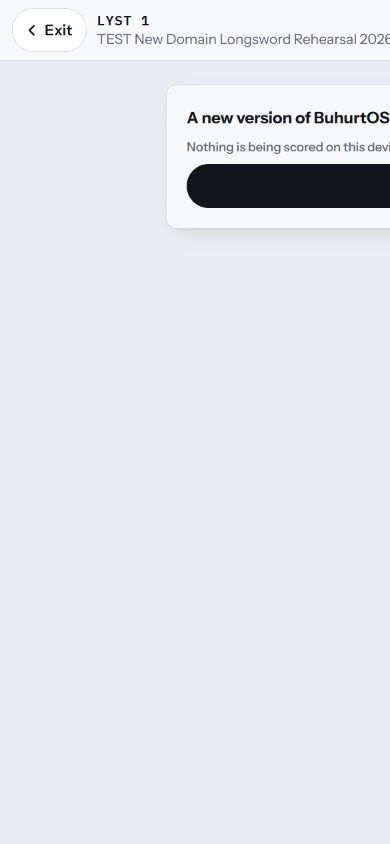
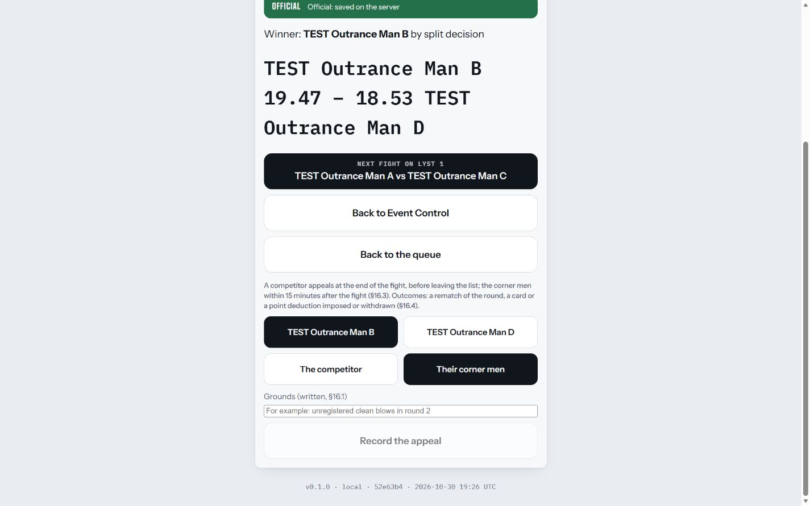
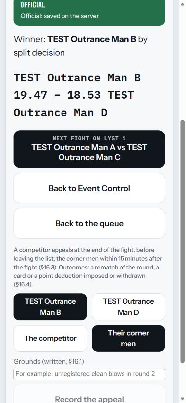
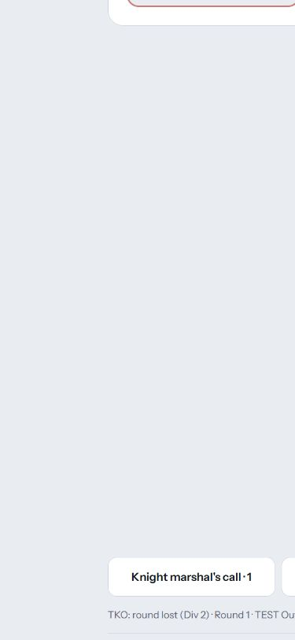
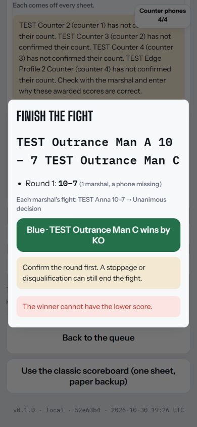
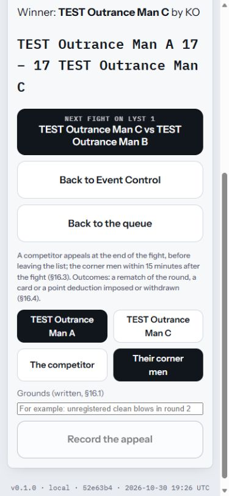
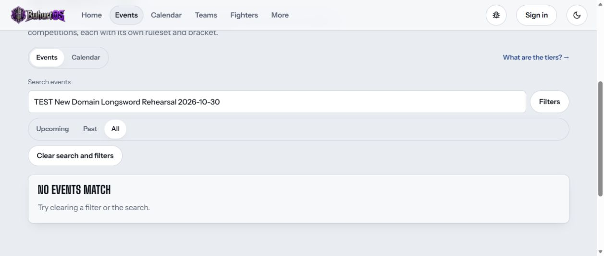
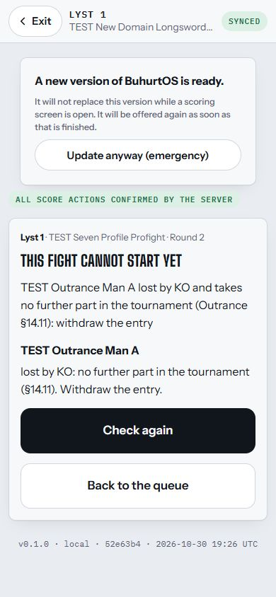